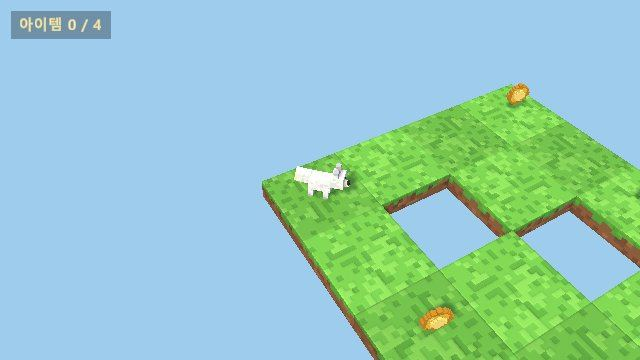
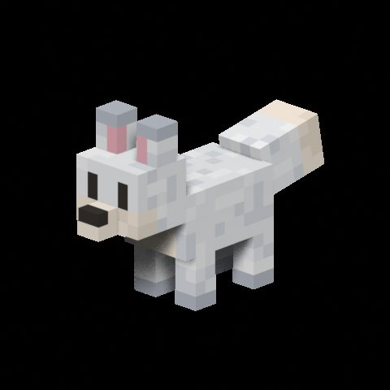
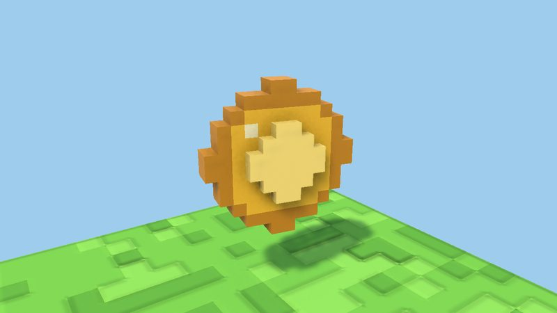
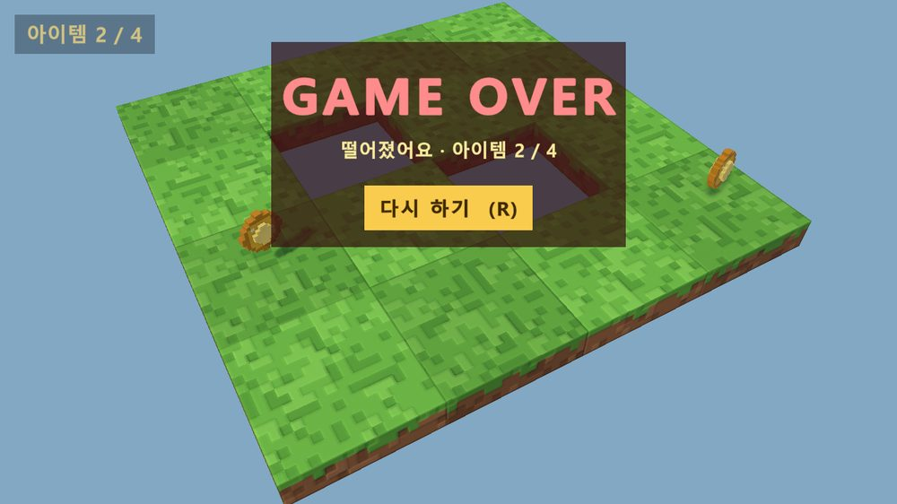
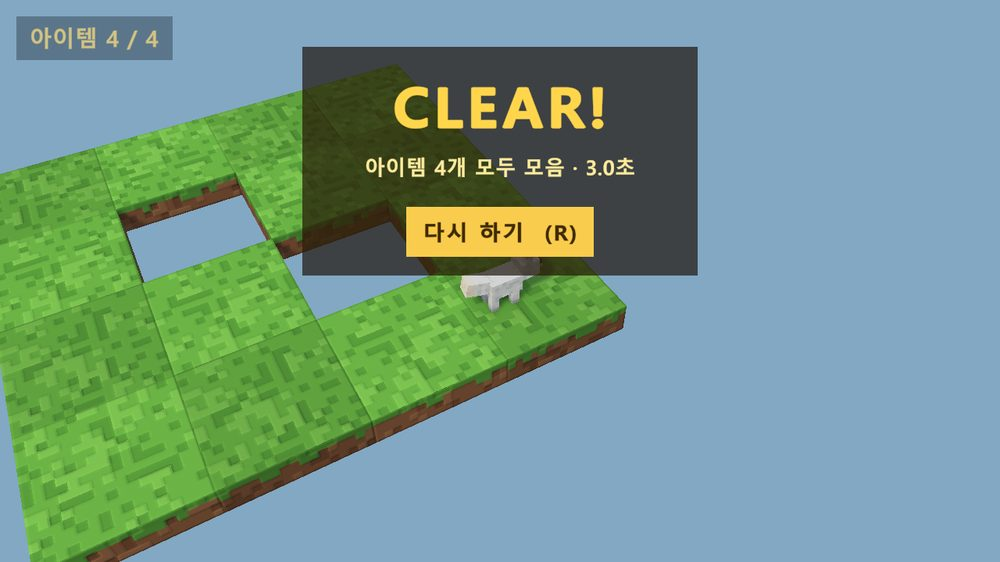

결과 보고서 · 2026-09-29
복셀 여우 타일 게임
흰 복셀 여우가 구멍 2개가 뚫린 4×4 타일맵에서 코인 4개를 모으는 짧은 3D 게임입니다. 계획서의 1~8단계를 모두 마치고 Windows 실행 파일을 직접 플레이해 확인했습니다.
실제 플레이 장면

녹화 장면 · 15fps
대기 · 아이템 0 / 4
- 동쪽으로 걷다가 점프시작
- 코인 (3, 3)1 / 4
- 남쪽 코인 (3, 1)2 / 4
- 서쪽 구멍에 빠짐GAME OVER
게임 구성
| 요소 | 내용 |
|---|---|
| 캐릭터 | 흰 복셀 여우 (복셀 612개, 코~꼬리 1.24m). Idle / Walk / Jump 동작을 Blender Python 스크립트로 생성 |
| 맵 | 4×4 타일(한 칸 2m), 구멍 2개, 둘레는 낭떠러지. 잔디 블록에 노멀맵으로 입체감 |
| 조작 | WASD·방향키·게임패드로 이동(타일 격자 방향으로 곧게), Space 점프, R 재시작 |
| 카메라 | 여우를 화면 가운데에 두고 따라가는 쿼터뷰 (내려다보는 각 45°, 방향 30°, 거리 11m) |
| 아이템 | 복셀 코인 4개. 돌면서 둥실거리고 닿으면 금색 반짝이와 함께 사라짐. 좌상단 아이템 n / 4 |
| 결과 | y < -5로 떨어지면 GAME OVER, 코인 4개를 모두 모으면 CLEAR!(걸린 시간). 결과가 나오면 조작·시간 정지 |
| 재시작 | R 키(언제든) 또는 [다시 하기] 버튼 → 여우·코인·카운터·시간이 모두 처음 상태로 |




진행 과정
- 1. Unity 프로젝트계획
URP 템플릿, Input System, TextMeshPro, Main 씬, GitHub 공개 저장소(LFS)
- 2. 복셀 여우 캐릭터계획
스크립트 하나로 모델 → 리그(본 8개) → 동작 3개 → FBX, Unity 설정 자동화
- 2-1. 흰 여우 · 0.9배피드백
"더 예쁜 여우로" → 붉은 여우를 흰 여우로, 크기 0.9배
- 3. 4×4 타일맵 + 이동계획
문자열 레이아웃으로 타일·구멍 생성, 이동·점프, 쿼터뷰 카메라
- 3-1. 바닥 노멀맵피드백
잔디 덩어리마다 턱, 타일 모서리를 둥글게 해서 입체감
- 4. 애니메이션 연결계획
Walk 재생 속도를 이동 속도에 맞춰 발 미끄러짐 최대 1.3cm
- 4-1. 카메라 추적 · 격자 방향 이동피드백
카메라가 여우를 따라가고, 화살표가 타일 줄을 따라 곧게
- 4-2. 카메라 거리 1.5배되돌림
원인이 Game 창 Scale 5배로 밝혀져 원래 카메라로 복귀, 이력은 남김
- 4-3. 점프 거리피드백
구멍에 잘 빠진다 → 달리며 뛴 거리 2.08m를 2.68m로 (구멍 너비 2m)
- 5. 아이템계획
복셀 코인, 획득 반짝이, 한글 카운터
- 6. 게임 종료 / 성공계획
GAME OVER / CLEAR! 패널, 결과가 나오면 조작·시간 정지
- 7. 재시작계획
R 키와 [다시 하기] 버튼, 씬을 다시 불러 처음 상태로
- 8. Windows 빌드계획
아이콘을 넣어 실행 파일 완성, 사용자 플레이 확인
사용자 피드백으로 바뀐 것
| 요청 | 원인 | 조치 |
|---|---|---|
| 더 예쁜 여우로 | — | 흰 털 3톤, 분홍 귀 안쪽, 크림색 볼, 크기 0.9배 |
| 바닥에 입체감 | 색 무늬만 있어 평평해 보임 | 색·노멀 텍스처 아틀라스, 잔디 덩어리 턱 |
| 카메라가 캐릭터를 따라가야 | 맵 전체를 비추는 고정 카메라 | 여우를 가운데 두고 따라가는 카메라 |
| 화살표가 대각선으로 감 | 카메라가 격자에서 30° 돌아가 있는데 입력은 화면 기준 | 입력을 가장 가까운 격자 축으로 (↑ 북쪽, → 동쪽) |
| 카메라를 멀리, 여우를 가운데로 | Game 창 Scale이 5배였음 | 바꿨다가 되돌림 |
| 점프가 짧아 구멍에 잘 빠짐 | 뛴 거리 2.08m ≈ 구멍 2m | 높이 1.5m, 중력 -15 → 2.68m |
주요 설계 결정
모든 에셋을 스크립트로
여우는 Blender Python, 타일·코인·UI·씬 배치는 Unity 에디터 스크립트가 만든다. 값을 바꾸고 다시 실행하면 똑같이 재현된다.
발 미끄러짐을 계산으로
Walk 클립에서 보폭을 재 1배속 속도(0.868 m/s)를 구하고, 실제 속도 ÷ 이 값으로 재생 배속을 정한다. 다리 각도는 26°에서 40°로 늘렸다.
타일은 실행할 때 생성
레이아웃 문자열 네 줄만 고치면 맵이 바뀐다. 에디터에서는 기즈모로 배치를 보여 준다.
한글 글꼴은 설치된 글꼴로
맑은 고딕은 재배포할 수 없어 저장소에 넣지 않고 실행할 때 Windows에 설치된 글꼴을 불러온다.
재시작은 씬 다시 불러오기
정적 이벤트를 꼭 떼어 두어 여러 번 재시작해도 코인을 두 번 세지 않는다.
미리보기는 Play 모드에서
편집 모드에서는 여우가 잘못 그려져서 실제 게임과 같은 조건에서 캡처해 단계마다 눈으로 확인했다.
품질 검증
단계를 마칠 때마다 자동 테스트 전체를 다시 돌렸습니다. 프레임 간격을 고정해 매번 같은 결과가 나옵니다.
| 영역 | 확인한 것 |
|---|---|
| 에셋 | 여우 본·클립·크기, 타일·코인 크기와 콜라이더, 노멀맵 설정, 씬 연결 |
| 이동 | 이동 속도 3 m/s, 점프 높이 1.5m, 구멍·가장자리 낙하, 격자 방향 입력, 카메라 중앙 유지 |
| 애니메이션 | Idle / Walk / Jump 전환, 240fps로 잰 발 미끄러짐 |
| 게임 흐름 | 코인 획득, GAME OVER / CLEAR, 조작·시간 정지, 가상 키보드 R 입력으로 재시작 |
겪은 문제와 교훈
| 문제 | 교훈 |
|---|---|
| 발 미끄러짐 테스트가 "통과"였지만 다리가 움직이지 않고 있었다 (Animator 컬링) | 통과한 테스트도 측정값이 말이 되는지 확인한다 |
| 편집 모드 캡처에서 흰 여우가 갈색으로 보였다 | 실제 게임과 같은 조건(Play 모드)에서 확인한다 |
| 카메라가 가깝고 치우쳐 보인다는 피드백 | 원인은 Game 창 Scale 5배. 되돌릴 수 있게 커밋을 나누고 이유를 남긴다 |
| 자동 테스트에서 R 키 입력이 안 들어갔다 | Input System은 창 포커스가 있어야 키보드를 받는다. 테스트 동안만 설정을 바꾸고 되돌린다 |
실행 · 다시 만들기
- 게임 실행
VoxelFox/Build/VoxelFox.exe - 여우 다시 만들기
bash tools/build_fox.sh - 씬 조립 + 테스트 + 미리보기
bash tools/build_map.sh - 실행 파일 빌드
bash tools/build_windows.sh
남은 과제 · 계획서 범위 밖
- 사운드와 배경음악 (코인 획득음, 점프음, 결과 효과음)
- 여러 스테이지, 움직이는 타일, 타이머 랭킹
- 떨어질 때 전용 동작 (지금은 걷던 자세 그대로 떨어진다)
- Windows 외 플랫폼: 재배포 가능한 한글 글꼴(예: Noto Sans KR)을 저장소에 넣어야 한다